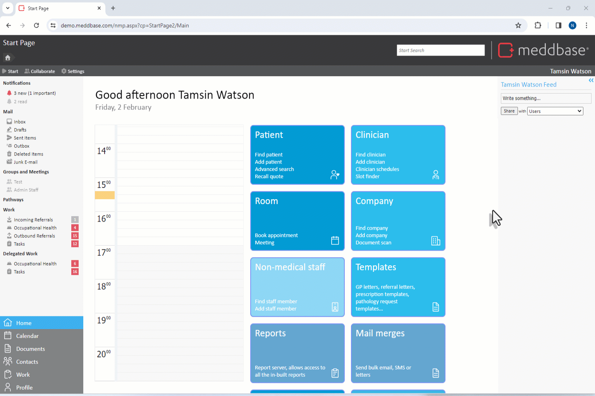
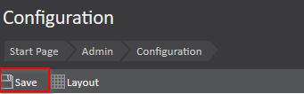

Meddbase System Administrators/Superusers with access to the Admin section of the Start Page can view and modify a host of configuration options and settings controlling the behaviour and workflows in the application. Many of the above are configured/controlled via the Configuration section*.
This article is a part of a collection of articles on the Admin > Configuration section. Click here for an overview article.
Many of the settings described in this series have default values when a Meddbase chamber is first created and do not need changing.
* Access to the Admin section and the ability to add/change configuration and settings are determined by the User's Role Group membership and Security Policy permissions granted. Please refer to the below articles for more details.
Understanding Role Groups - Definitions, related workflows and behaviours
This article is an overview of the Admin > Configuration > Notifications section and the available settings within.
Admin > Configuration > Notification allows Super Users to set default behaviours, however individual users can set their own Notification behaviour via Start Page > Settings > Preferences, thus overriding the defaults.
Notifications are alerts created by Meddbase to inform you when something within the system may be of interest to you, these may take a number of forms:
| Type | Description |
| Pathology | Alerts a user when a new pathology result requires their attention. |
| PACs | Alters a user when a new PACs inbox item requires their attention. |
| Appointment | Alerts a user when an appointment task has been created. |
| Alerts a user when they have received a new email. | |
| Feed | Alerts a user when something has been posted on their personal feed |
| Network | Alerts a user when something has been shared with their network. |
| Prescription | Alerts a user when a new prescription has been made a requires their attention. |
| Task | Alerts a user when a new task has been assigned to them. |
| Incoming Referral | Alerts a user when a referral has been made to the clinic. |
| Outgoing Referral | Alerts a user when a referral has been made by the clinic and requires their attention. |
To access the Notifications configuration, the permitted user should:

The notifications can be tailored to behave differently depending upon whether the user is logged in or logged out of the application and can be set to alert users via the application (chamber) itself, forwarded to the user's email or SMS (Or any combination of these three).
*These notification defaults will apply to all users unless they choose to override them in their user personal settings.
Depending on the task type, there are different notification setting options for when users are logged in to the chamber, and logged out. From left to right, the options are:
For most notification types you will find only two check boxes - the white checkbox will stop all notifications of that type going to a user, the darkest blue checkbox will allow all notifications of that type to the user. This can be observed in the image below next to "Appointment"
The exception to this is in Pathology and PACs work types where the user can be notified based on the urgency of these results (The lighter blue will inform a user only when a high priority result is received, the lighter blue will allow anything above normal status to notify the user.) This can be observed in the image below next to "Pathology" and "PACs"

Notification type | Application, Email and SMS notification toggle types |
Pathology | None | High Priority Only | Normal Priority | All |
| PAC's | None | High Priority | All |
| Appointment | None | All |
| None | All | |
| Feed | None | All |
| Network | None | All |
| Prescription | None | All |
| Task | None | All |
| Incoming Referral | None | All |
| Outgoing Referral | None | All |
| Administration | None | All |
For example, a clinician may not wish to be notified about Pathology reports unless they are high priority when outside of their work hours. When you are satisfied with these settings, hit the ‘Save’ button in the top left (for global settings) or the bottom of the page (in personal settings).
